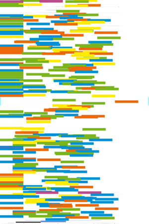
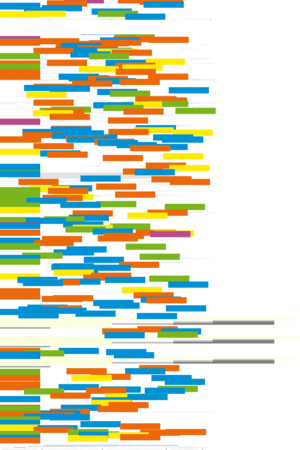
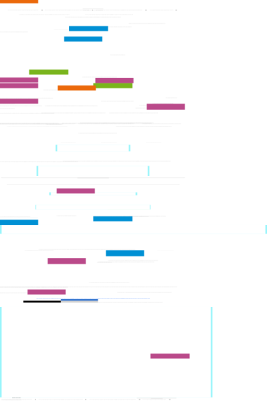
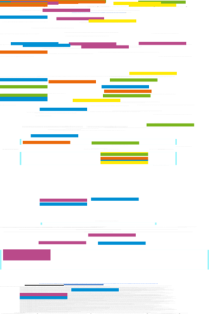

| About IR |
| Editors |
| Author instructions |
| Copyright |
| Author index |
| Subject index |
| Search |
| Reviews |
| Weblog |
| Register |
| Home |
Volume 13 No 4 December, 2008
Proceedings of the 7th conference on Information Seeking in Context, Vilnius, September 2008
Summaries of Doctoral Workshop presentations
Regular papers
Marta Rocha Camargo
A grounded theory study of the relationship between e-mail and burnout
Arto Lindblom and Rami Olkkonen
Link between contractually integrated retail entrepreneurs' working experience and their information gathering and interpreting styles
Fernanda Peset and Antonia Ferrer
Implantación de la Open Archives Initiative en España
Enrique Murillo
Searching Usenet for virtual communities of practice: using mixed methods to identify the constructs of Wenger's theory
M. A. Marzal, Javier Calzada-Prado and Marina Vianello
Criterios para la evaluación de la usabilidad de los recursos educativos virtuales: un análisis desde la alfabetización en información
 Resúmenes en Español
Resúmenes en Español
Watch this: LOD - linking open data — one of a series of occasional columns by Terrence A. Brooks of the Information School, University of Washington, USA.
Looking for something else?
Reviews
Bailey, Steve. Managing the crowd: rethinking records management for the Web 2.0 world London: Facet, 2008.
Boslaugh, Sarah and Watters, Paul Andrew Statistics in a nutshell. Sebastopol, CA: O'Reilly, 2008.
Brophy, Peter, Craven, Jenny & Markland, Margaret , (Eds.) Libraries without walls 7. Exploring 'anywhere, anytime' delivery of library services. London: Facet Publishing, 2008.
Dearstyne, Bruce W. (ed.). Leading and managing archives and records programs: strategies for success. London: Facet, 2008.
Griffiths, Dawn Head first statistics Sebastopol, CA: O'Reilly, 2008.
Johnson, Deborah G. and Wetmore, Jameson M. Technology and society: building our sociotechnical future. Cambridge, MA: The MIT Press, 2009.
Lidman, Tomas. Scientific libraries: past development and future changes. Oxford: Chandos Publishing, 2008.
Lushington, Nolan. Libraries designed for kids. London: Facet Publishing, 2008.
Mulder, Steve and Yaar, Ziv. The user is always right: a practical guide to creating and using personas for the Web Second edition. Berkeley, CA: New Riders, 2007.
Newson, Alex, Houghton, Deryck and Patten, Justin. Blogging and other social media: exploiting the technology and protecting the enterprise. Farnham, UK: Gower, 2008.
What's in the open access e-journals?
Conference announcements
EnIL International School on Business Information Literacy
INFORUM: 15th Conference on Professional Information Resources, Prague, May 27-29, 2009.
Canadian Association for Information Science—37th Annual Conference, Ottowa, Canada. May 28-30, 2009
A message to Conference organizers.
Check the other resources available at InformationR.net - free resources for information researchers. If you find Information Research useful please sign in and we'll notify you of future issues.
Contribute ideas and links to relevant resources on the Weblog. Join at http://info-research.blogspot.com
Information Research: an international electronic journal, is published four times a year by Professor Tom Wilson with technical support from Lund University, Sweden and editorial support from the Swedish School of Librarianship and Information Science, Högskolan in Borås.
| ||||

|
|
Web Counter |
||